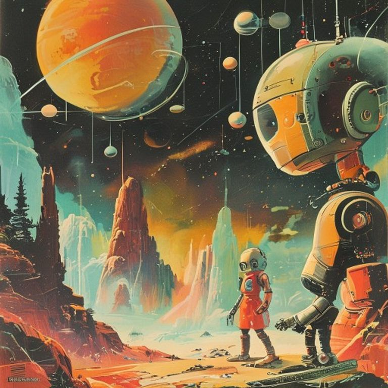

Ключ Архитектора

После того как хаотичные импульсы на планете сияний улеглись, «Искра» снова заскользила сквозь мрак. Но впервые за всё время их долгого путешествия реакторы корабля работали с идеальной, почти поэтической точностью. Пять стихий — Ветрос, Аквас, Драгос, Террос и недавно примкнувший к ним Материос — наконец нашли свой общий ритм.
— Наш бортовой компьютер просто мурлычет от удовольствия! — заметил Драгос, с ухмылкой поправляя настройки терморегуляции. — Огонь в топках горит ровно, без единой вспышки. Похоже, мы наконец научились не мешать друг другу.
— Это не просто порядок, — возразил Аквас, глядя на сияющие синим индикаторы. — Это конструктивная интерференция. Когда все пять стихий действуют сообща, их волны усиливают друг друга. Мы излучаем сигнал гармонии, который… какими-то древними датчиками уже принят.
Террос тяжёлым, неторопливым шагом подошёл к главному экрану. На датчиках дальней локации возник непонятный объект. Он не был суровым миром, как Эрадус, и не мёртвым мегаполисом, как Некрополис. В точке нулевой гравитации парящего сектора замерла исполинская сфера из идеального тёмного сплава.
— Смотрите, — тихо сказал Материос. По его металлическому корпусу пробежали золотистые искры. — Нить энергии, которую мы нашли на том астероиде, ведет прямо сюда. Эта сфера словно соткана из той же материи, что и я сам.
Ветрос крутанул штурвал, наводя «Искру» на центр объекта. — Чувствую вибрацию сквозь броню корабля, — удивлённо прошептал он. — Это не ветер и не тишина пустоты. Это огромный массив данных, записанный на языке всех наших элементов.
Когда «Искра» приблизилась, гигантская конструкция словно узнала экипаж. Тёмный металл бесшумно раздвинулся, открывая путь в самое сердце сферы. Там, в невесомости, плавало ядро — сложный кристаллический механизм. На его гранях чётко выделялись пять углублений, идеально подходивших под энергетические подписи Огня, Воды, Земли, Воздуха и Материи.
— Древний замок и пятиключевая скважина, — хмыкнул Драгос. — Ну что, проверим нашу сыгранность?
Они одновременно направили свои резонансные излучатели на ядро. Пять лучей — алый, лазурный, изумрудный, серебристый и золотой — ударили в кристалл. Механизм мгновенно ожил, наполняя зал мягким светом, и над панелями «Искры» развернулась трехмерная карта неизвестного края Вселенной.
Но самое удивительное произошло секундой позже. В центре ожившего ядра со щелчком открылась шестая, доселе скрытая ниша. Она была пуста, но из неё вырвался чёткий направленный импульс.
— Невероятно, — выдохнул Аквас, перепроверяя расшифровку данных. — Этот сигнал поступает из межгалактической пустоты. И он содержит чертёж… ещё одного элемента.
Террос медленно наклонил голову и произнёс: — Мы думали, что собрали весь мир воедино. Но если нас должно быть шестеро… кто же остался там, за пределами нашей Галактики?